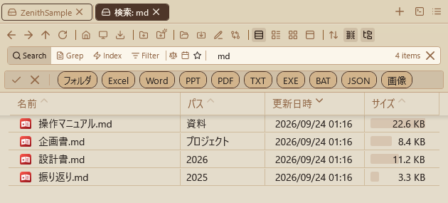

Search Features¶

The four buttons at the left end of the search bar choose how you search.
| Button | How it searches | Key |
|---|---|---|
| Search | Normal search. Finds items by name in the current folder and all its subfolders | Ctrl+F (or Ctrl+E) |
| Grep | Content search. Finds text inside the files in the current folder | Ctrl+Shift+G |
| Index | Index search. Finds items by name across all the folders you have registered | Ctrl+Shift+F |
| Filter | Filter in place. Narrows the current list to what you type | Ctrl+I |
Ctrl+F moves to the search box, and brings you back to normal search if you are in index search. Type words in the search box and press Enter to search. Where the results appear is set by "Search Behavior" (Search Behavior).
Normal search (Search)¶
- Scope: The folder you have open and every subfolder inside it, searched on the spot by walking the folders.
- Syntax: Separate words with spaces for AND (must contain all), with
|for OR (any of them), use-wordto exclude,ext:pdfto pick an extension, and wildcards such as*.pdfandreport?.txt. You can also filter by type, date modified and size (Filtering by properties). Turn on ".*" in the search bar to treat everything you type as a regular expression (Searching with regular expressions). - Results: Both files and folders are found, newest modified first. Click a column heading to sort differently, by name for example. Above the results are type filters (Folder, Excel, Word, PPT, PDF, TXT, EXE, BAT, JSON, Image, Other) and the count.
- Windows index: A setting lets normal search also look inside files through the Windows index (Searching file contents with the Windows index).
- Second search bar row: When enabled, the search bar moves to the second row of the header only in a side-by-side dual-pane layout, giving the search field and filters more width (View Options).
Index search (Index)¶
- Scope: Every folder registered in the "Index Search" view of the nav pane, searched together wherever you happen to be. Open the view with
Ctrl+Shift+4(with the "Zenith 2" keymap,Ctrl+KthenI). - Both files and folders are indexed. Files without an extension (temporary files, caches and the like) are not indexed, so index search cannot find them (normal search can). Large working folders such as
.gitandnode_modulesare skipped as well. - Results: Up to 500, newest modified first.
- Narrowing the folders (scope): In index search, a folder icon with a badge (such as 3/10) appears in the search bar. Click it to list the registered folders and tick the ones to search. "Select all" and "Deselect all" switch them all at once. The icon and badge are highlighted while the scope is narrowed. Results refresh as soon as you change the selection, and the selection is kept after you close the app. Locked folders can be selected too and are searched as they were when locked.
- While the index is being built: What has been indexed so far is already searchable. The status bar shows progress as "Updating index (N)...".
How to register folders, keep them up to date and read their states is covered in Index Settings and Index Search.
Content search (Grep)¶
- Purpose: Finds words in the contents (text) of files in the folder you have open. Unlike normal search, it looks at the text inside files rather than their names.
- How it works: It uses the copy of ripgrep that comes with the app.
- Case and regular expressions: Only in content search, an "Aa" button (match case) appears in the search bar. Turn on ".*" to search with a regular expression (Searching with regular expressions).
- Results: Matching files are listed. The Match column shows the first matching line (line number and text) and how many matches the file has.
- Limits: Files up to 50 MB are read, and up to 1,000 files are listed. Binary files, anything hidden (hidden files and the insides of hidden folders) and files listed in
.gitignoreinside a Git repository are skipped. UTF-8 is recognised, as are files with a BOM (such as UTF-16).
Filter in place (Filter)¶
- Purpose: Narrows the list of the folder you have open on the spot as you type. No results tab opens, and subfolders are not searched.
- How: Press
Ctrl+Ior the Filter button in the search bar; the cursor moves to the search box and Filter mode starts. Each keystroke narrows the list to items whose names contain what you typed (case is ignored). With ".*" on, only items whose names match the regular expression remain. While the expression you are typing has an error, the list stays as it was filtered last. - While in Filter mode, the size and date filter buttons and the search presets button cannot be used.
- Clearing: Erase the text with the × in the search box or
Escto bring the list back and return to normal search. Pressing another mode's button also clears it.
Search history¶
Click the search box to see your earlier searches. Normal, content and index searches share one history list (up to 100 entries), and the icon on each row shows which kind of search it was.
If a preset, size filter or date filter was in use, "Search Presets: name", "Size: …" and "Date: …" appear to the right of the words. The preset name is found by matching the saved presets' conditions, so it also appears when you set the same conditions by hand.
Choosing an entry brings back the search mode, size filter and date filter as they were and searches again.
Clearing the search box (Esc)¶
Pressing Esc in the search box first clears the text; pressing it again also clears the size and date filters and the scope and ends the search. Turn on "One-press full reset with Esc" under Control Deck → "Search" → "Search bar" (off by default) to clear everything with one press.
Size and date filters and search presets¶
- Size and date filters: The size and date buttons in the search bar narrow results by file size and by date modified. They apply to normal, index and content searches, and a button is filled with the selection color while its filter is on. Right-click a button to clear just that filter. See Size and Date Filters.
- Search presets: The ★ in the search bar saves frequently used conditions under a name and brings them back. Right-click the ★ to clear the search text, size, date and scope all at once. See Search Presets.
Filtering by properties¶
Write name:value in the search box to filter by type, date modified and size as well as by file name (the same idea as File Explorer's search). These combine with plain words, | OR, -word exclusion, ext: and wildcards, and apply to file name search (including subfolders).
| Write | Meaning |
|---|---|
kind:folder / kind:file |
Folders only / files only |
kind:picture, kind:video, kind:music, kind:document, kind:archive, kind:program |
Pictures, videos, music, documents (Office, PDF, text and so on), archives, programs |
date:today, yesterday, thisweek, lastweek, thismonth, lastmonth, thisyear, lastyear |
Modified today, yesterday, this week (from Sunday), last week, this month, last month, this year, last year |
date:2026-10-01 / date:>2026-10-01 / date:<=2026-10-01 / date:2026/10/01..2026/10/03 |
That day, after it, up to it, between them (both ends included) |
size:empty, tiny, small, medium, large, huge, gigantic |
File Explorer's size groups (empty, up to 16 KB, up to 1 MB, up to 128 MB, up to 1 GB, up to 4 GB, over 4 GB) |
size:>10MB / size:<1.5KB / size:>=500 |
Larger than, smaller than, at least (units KB, MB, GB; bytes without one) |
name:report |
The name contains it (same as a plain word) |
tags:travel |
A tag starts with it. Only when the Windows index is used (see below) |
rating:4 / rating:>=4 |
Rated 4 stars / at least 4 stars. Only when the Windows index is used |
- Japanese names work too:
種類:(kind),更新日時:or日付:(date),サイズ:(size),名前:(name), with Japanese values such as画像,今週and中. - Examples:
report kind:document date:thismonth(documents modified this month with "report" in the name) /kind:music | kind:video/ext:pdf size:<1MB. - Filtering by size leaves folders out (a folder's size is not known while searching).
- Values that cannot be read (such as
kind:unknown) are matched against the name as plain words. - Tags and rating (
tags:,タグ:,rating:,評価:) only filter when "Search file contents with the Windows index" is on in Settings and the place you search is indexed (like File Explorer's search, they use the index's information). Otherwise the status bar tells you so, and the search skips those words and uses the rest (reading each file's properties while walking folders would be very slow). - While ".*" (regular expressions) is on, these are taken literally as well.
Searching with regular expressions¶
Turn on "." in the search bar to treat what you type as a regular expression. It works in normal search, index search, Filter in place, and content search (Grep). There is one "." switch per pane, and it stays as it is when you change modes. If searches open in the opposite pane, the pane you searched from passes its setting along.
- Name searches (normal search, index search, Filter): Everything you type is one expression, matched against the name including its extension. A match anywhere in the name counts (add
^and$to match the whole name). Folder paths are not matched.- While ".*" is on, spaces (AND),
|(OR),-word(exclude), andext:are taken literally as regular expression text (|works as the regular expression "or"). To narrow by extension, write something like\.pdf$. - Case is ignored. To match case, start the expression with
(?-i). - All .NET regular expression syntax is available (lookahead, lookbehind, backreferences, named groups, conditionals,
\p{…}, and more).
- While ".*" is on, spaces (AND),
- Content search (Grep): Uses ripgrep's regular expressions. Expressions with backreferences, lookahead, or lookbehind automatically switch to PCRE2. Use "Aa" to match case. Syntax that only .NET has (balancing groups, character class subtraction
[a-z-[aeiou]]) is not available.
| To find | Expression |
|---|---|
JPEGs starting with IMG_ and 4 digits |
^IMG_\d{4}\.jpe?g$ |
Excel files without old |
^(?!.*old).*\.xlsx$ |
| Names with the same digit twice in a row | (\d)\1 |
Only Report with a capital R at the start |
(?-i)^Report |
| Text files named only in hiragana | ^\p{IsHiragana}+\.txt$ |
When the expression has an error: The search box border turns red as you type, and "Invalid regular expression (near character N)" appears on the right. Point at it to see the detailed reason. Pressing Enter in this state does not search, and a notification tells you so. In content search, if ripgrep rejects the expression, "ripgrep rejected the expression" appears, and pointing at it shows ripgrep's message.
Time limit: Matching each name stops after 0.1 seconds. If an expression is too complex and hits the limit, the search stops there and "Matching stopped because the expression is too complex" appears (matches found until then stay).
Search presets also save the "." and "Aa" states and restore them when applied (see Search Presets). Search history does not save them; picking from history searches with the current "." setting.
Search Behavior (Configurable in Control Deck)¶
In Control Deck (default: Ctrl+Shift+O) > "Search" > "Opening search results", "Search Behavior" offers three choices for where search results appear. The default is "Same pane, new tab". All of them search when you press Enter.
| Option | Behavior | Best suited for |
|---|---|---|
| Same pane, new tab | Opens a new results tab in the same pane. Typing new words in the results tab and pressing Enter searches again in that tab. | Results stay within the same pane, keeping context predictable. Recommended default for beginners. |
| Same pane, current tab | Shows the results in the current tab. | No extra tabs, and quick switching between search and the normal view. |
| Other pane, new tab | Searching in Pane A shows the results in a new tab in Pane B, and vice versa. Switches to dual-pane automatically in single-pane mode. | For comparison work and advanced users. Useful when viewing search results alongside the original listing. |
Whichever you choose, pressing × at the right end of the search bar ends the search and shows that tab's searched folder again (the tab is not closed).
Turn on Auto-switch to single pane mode when searching ("Search" > "Search bar", off by default) to switch to a single pane when you search, so the results get the full width. A search started in Pane B appears in Pane A. Ending the search brings back the dual-pane layout.
Searching file contents with the Windows index¶
Turn on "Search file contents with the Windows index" under Control Deck → "Search" → "Search bar" (off by default) and normal search uses the Windows index (Windows Search, the same one File Explorer's search uses). Besides names, it also finds files whose contents contain the words (text, PDFs, Office documents and other formats Windows indexes the contents of).
- The index is used when the place is fully indexed (Documents, Downloads, Desktop and so on; Windows' "Indexing Options" decide what is indexed) and you type plain words. Searches with
|OR, wildcards (*?) or regular expressions (".*"), and places outside the index, still walk the folders and match names as before. kind:,date:,size:,ext:and-wordfilters apply to the index results too.- Up to 5,000 results are shown. Windows builds the index in the background, so a file you have just created may not show up for a while.
Path Click Behavior in Search Results (Configurable in Control Deck)¶
In Control Deck > "Search" > "Opening search results", "Search Result Path Click Behavior" offers three choices for what happens when you click the path column in search results. The default is "Same pane, new tab".
| Option | Behavior | Best suited for |
|---|---|---|
| Show in same tab | Switches from the search results to the normal listing and shows the path in the same tab. | Navigate quickly to folders without adding tabs. |
| Same pane, new tab | Opens a new tab in the same pane. | Keep the search results tab while opening clicked paths in separate tabs. The default, and handy alongside search. |
| Other pane, new tab | Results from Pane A open in a new tab in Pane B, and vice versa. Switches to dual-pane automatically in single-pane mode. | For comparison work and advanced users. View search results and opened folders side by side. |